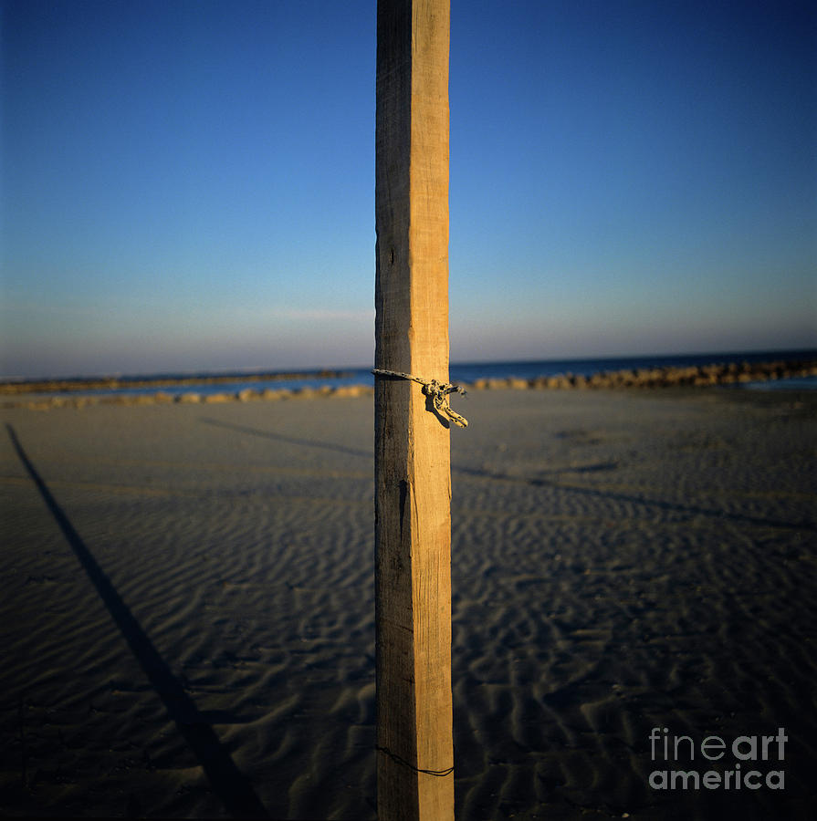

Post
Posts are typically displayed in reverse chronological order, so that the most recent post appears first, at the top of the web page. Until 2009, blogs were usually the work of a single individual, occasionally of a small group, and often covered a single subject or topic. In the 2010s, "multi-author blogs" (MABs) have developed, with posts written by large numbers of authors and sometimes professionally edited.
